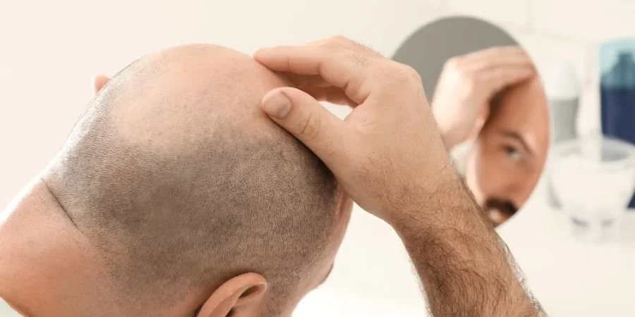

Muitas são as dúvidas sobre transplante capilar:
Qual a durabilidade do transplante capilar?
Qual o melhor momento de fazer implante capilar?
Quais são os riscos do transplante capilar?
Como é feito o transplante capilar? É definitivo?
Então vamos lá... O transplante capilar é um procedimento cirúrgico realizado sob anestesia local, com o objetivo realocar os folículos capilares que não têm predisposição para calvície (localizados na região da nuca e lateral da cabeça, chamada de “área doadora”) para a região que está calva (“área receptora”), fazendo com que os cabelos voltem a surgir nessa área.
Nos casos em que a região da área doadora se encontra comprometida, pode-se extrair os folículos de outras regiões do corpo, como a barba e tórax, por exemplo.
As técnicas mais utilizadas para o transplante capilar são: FUE (Extração de Unidade Folicular) e a FUT (Transplante de Unidade Folicular).
O que é a FUT?
FUT é uma técnica mais antiga que envolve a remoção de uma faixa de tecido do couro cabeludo, deixando uma cicatriz linear na região.
O que é a FUE?
FUE é uma das técnicas mais modernas de transplante capilar e consiste, na coleta individual de cada uma das unidades foliculares da área doadora e com posterior aplicação nas regiões calvas.
Atualmente, a técnica FUE é a mais utilizada nas cirurgias de transplante capilar pois o seu resultado é mais natural e traz maior conforto ao paciente no pós-operatório.
O tempo médio de cirurgia pode variar de 8 a 16 horas, a depender do método de extração dos folículos doadores, da quantidade e a área a ser tratada.
Para quem é indicado o Transplante Capilar?
O transplante capilar é indicado para pessoas com diferentes graus de calvície (áreas pequenas ou grandes) e pode ser utilizado para preencher outras áreas do corpo, como a barba e falhas na sobrancelha,
Existe idade mínima para o Transplante Capilar?
Não existe idade mínima para o transplante capilar, mas é fundamental que o quadro de calvície esteja estável e com tratamento clínico associado (medicações e procedimentos no couro cabeludo), se indicado.
O procedimento não substitui o tratamento clínico, mas é complementar a ele. Dessa forma, mesmo após o transplante capilar, os pacientes devem continuar seus tratamentos clínicos para manter a calvície e outras doenças do couro cabeludo sob controle.
Atendimento individualizado
Aqui na Clínica MS Vida, as consultas são realizadas pela Dra. Flávia Souza. Agende a sua conusulta.
Agende sua consultaConheça a Dra. Flávia Souza
Médica especialista em Dermatologia pela Sociedade Brasileira de Dermatologia, com pós-graduação em Dermatologia e Medicina Estética pelo Instituto Pele Saudável/SP. É membro da Sociedade Brasileira de Dermatologia e da Sociedade Brasileira de Cirurgia Dermatológica, além do Grupo Brasileiro de Melanoma e do Colegio Ibero Latinoamericano de Dermatología (CILAD). Fellow em Tricologia e Transplante Capilar pela FAPECS/CNA/ AMB.